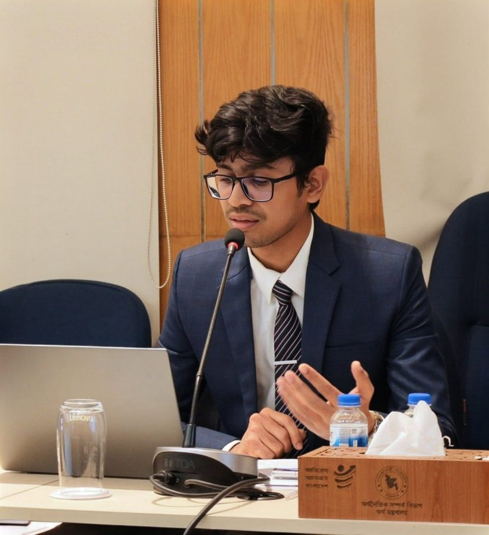
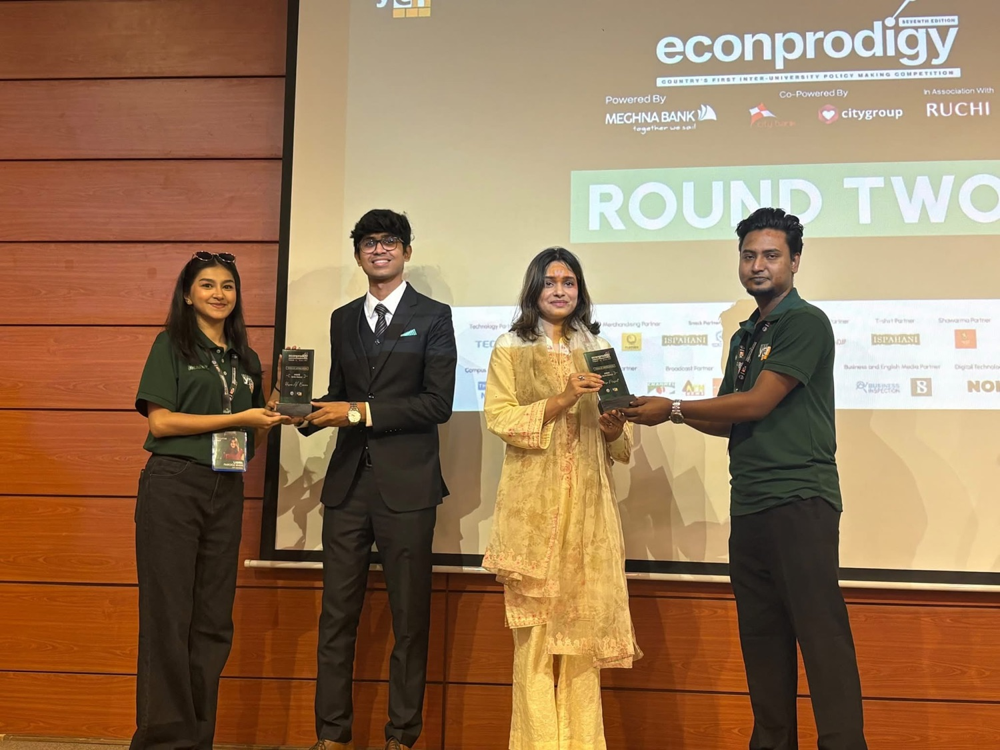
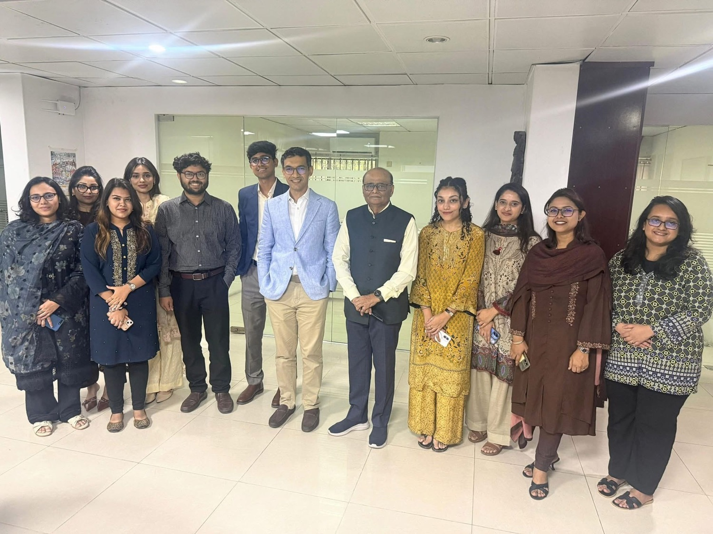
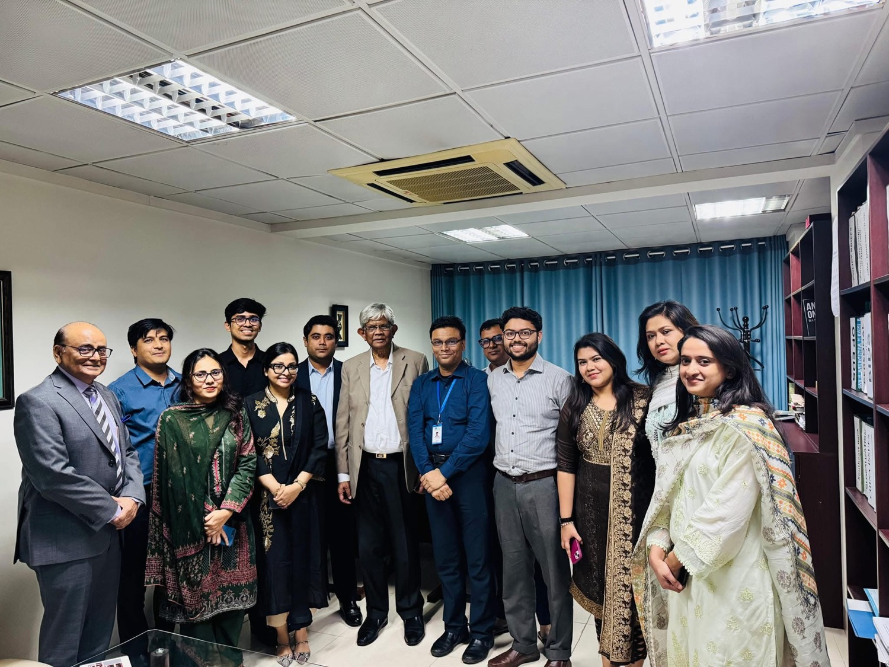
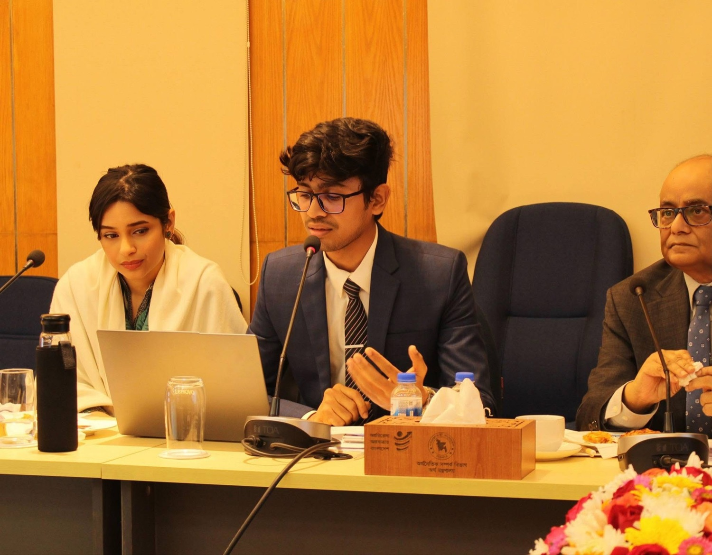
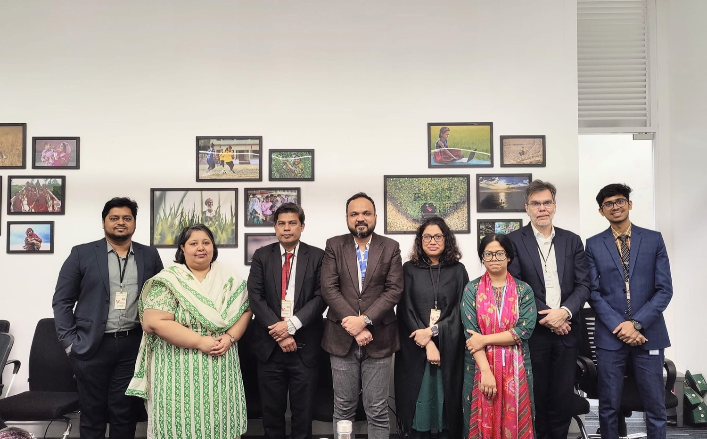

Trade & tariff policy
Tariff reform, trade agreements and policy impacts using GTAP, TRIST and quantitative methods.
Trade policy, quantitative research and undergraduate teaching for a more competitive, resilient Bangladesh.

Hasan Al Banna is a Senior Research Associate at the Policy Research Institute of Bangladesh (PRI), where he works on trade, taxation and macroeconomic policy. His work combines qualitative and quantitative analysis, policy writing and project coordination for public and private-sector clients.
At PRI, he has progressed from Research Intern to Research Associate and Senior Research Associate. He was named PRI Employee of the Year in 2025 and is a member of the Bangladesh–China Joint Research Team on Export Capacity Enhancement.
His research connects trade and economic policy with firm competitiveness and development in Bangladesh.
Tariff reform, trade agreements and policy impacts using GTAP, TRIST and quantitative methods.
Fiscal dynamics, inflation, growth and financial-sector developments.
Economic growth, environmental degradation and inclusive development.
Export capacity, diversification and Bangladesh’s participation in global markets.
National Board of Revenue · GTAP and TRIST simulations
Economic Relations Division · Quantitative analysis and policy writing
UNCDF A2GF · Research and recommendations for Bangladesh Bank’s Green Finance Reporting Template
DFAT, Government of Australia · Co-authored policy briefs
Mitsui & Co. · Growth, inflation and external-balance analysis
British American Tobacco Bangladesh · Research coordination and analysis
With Dr. Zaidi Sattar · East Asia Forum
Read article ↗With M. M. H. Prodhan, M. Khan and P. M. Bhuiyan · Policy Insights
With S. Yeasmin · Discover Environment · Lead author
With S. Yeasmin · Discover Global Society · Lead author
Hasan is an Adjunct Lecturer at Southeast University, teaching undergraduate economics courses.
A few highlights from policy forums, presentations and professional collaborations.





Full experience, research, education and professional activities.
For research and academic enquiries.